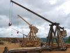
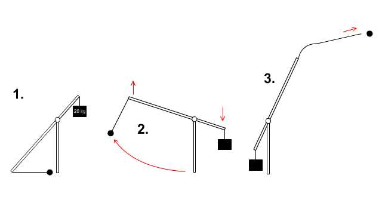
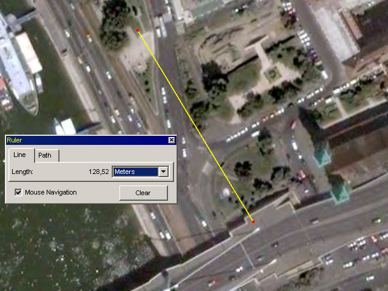
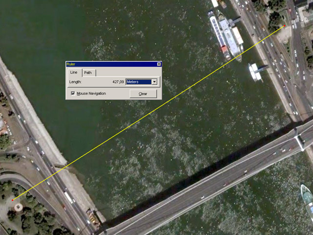
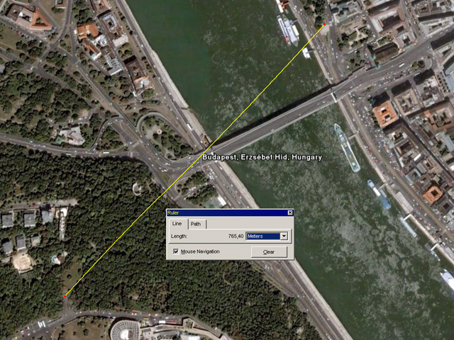
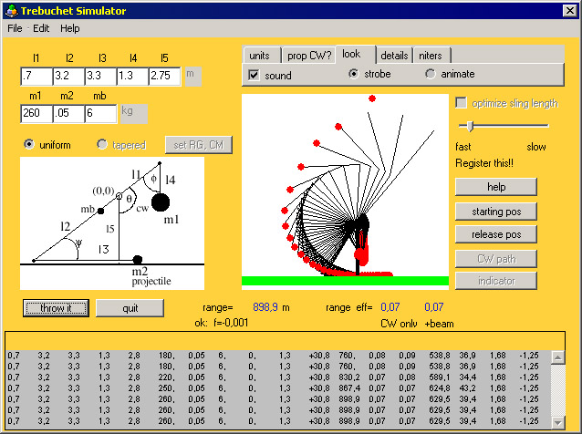
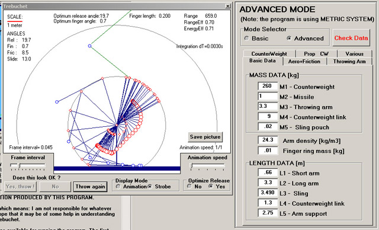
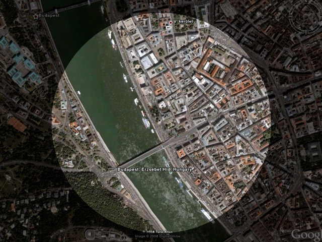
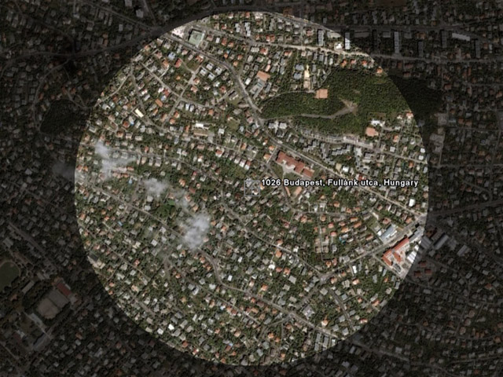
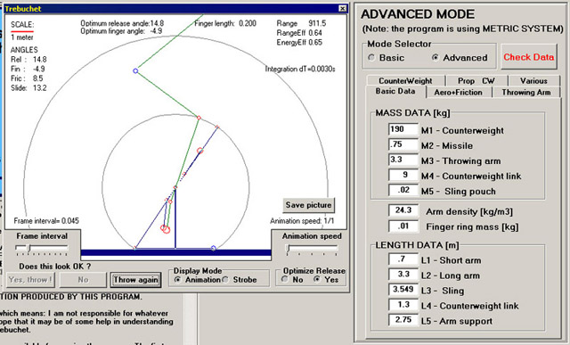

|
 | Az idei március 15-én nem voltam sehol - megdobáltátok ti Demszkyt nélkülem is, Fletó ki se merte dugni az ocsmány pofáját, és a rendőrök is jobban be voltak szarva, mint vártuk. Most már elmondhatom, hogy igazából nem kaptam én semmiféle rendőrségi tervet március 15-e előtt, de rendőr olvasóinktól rengeteg olyan információ érkezett, amelyből konkrét intézkedéseket is meg lehetett ismerni. Demszky rendezvényének biztosítási tervét például csaknem részletesen ismertük. A tojással dobálók fegyveres támadóként való kezelésére adott utasítást reggel visszavonták, ezért nem tepertek le senkit a Március 15-e téren. Ezúton fejezem ki egyébként gratulációmat a Demszkyt telibe találó hajítóbajnoknak, illetve annak a bátor srácnak, aki a rendőrök háta mögött elosonva lerugdosta a kátyúkirály koszorúját Petőfi Sándor szobráról. S akkor most pár szót arról, hogy miért is nem voltam ott, és mi az a torbacsil, azaz trebuchet, azaz hajítógép, és miért áll most egy ilyen gép az egyik, névtelenséget kérő gyárlakónk hátsó kertjében, amit a HírTV híradójában be is mutatott. Miután tavaly olyan szépen megpakoltuk Demszkyt tojással, és a rendőrség dühödten eredt az elkövetők nyomába, nyilvánvaló volt, hogy az idén olyan intézkedéseket hoznak majd, ami megakadályozza, hogy az eset megismétlődjék. Mint utóbb kiderült, ez nem sikerült teljesen, de ezt akkor még nem tudtuk. Már tavaly március 15-én, a Kossuth téren elgondolkodtam azon, hogy egy hajítógéppel át lehetne dobni a kordonokon, hiába bohóckodik ötven-hatvan méterre az épp aktuális gazember. Tanulmányozni kezdtem a középkori hajítógépek felépítését, fizikáját, ugyanis az Interneten számos weboldal foglalkozik ilyesmikkel. Kiderült, hogy egy jól megtervezett géppel nem csak negyven-ötven méterre, de akár egy kilométerre is el lehet hajítani egy tojást, vagy akár egy egész doboz tojást. Ráadásul egy hajítógép akár barkácsgépekkel is aránylag könnyen megépíthető. Adott volt tehát az ötlet, hogy idén egy ilyen géppel örvendeztessük meg Demszkyt, Fletót vagy valamelyik másik disznót. A különböző típusú hajítógépek közül nekünk a trebuchet felelt meg a legjobban. Ez az ostromgépek legkifinomultabb változata, és amióta megépítettünk egy ilyet, mély csodálattal kell adóznom a középkori hadmérnököknek. Akik egy ilyen gépet számítógép segítsége nélkül, primitív kéziszerszámokkal, fából meg tudtak szerkeszteni, és azzal várakat lerontani, igazi zsenik lehettek. Egy kicsit büszkék is lehetünk arra, hogy ezek a zsenik jórészt magyarok voltak. Az első ostromgépeket a görögök találták fel, és a rómaiak tökéletesítették. Ismerték a ballistát, azaz a dárdavetőt, ami voltaképpen egy nagy számszeríj volt, illetve a mangonelt, vagy más nevein catapultát vagy onagert, ami rugóerőn alapuló, falak és más erődítések lebontására szolgáló eszköz volt. A mangonel lényegében egy tengelyel elforgó, nagy kanál. A tengely körül, azzal párhuzamosan kötelek feszülnek. Ha a tengelyt elforgatják egy nagy kerékkel, a kötelek megfeszülnek, megcsavarodnak, és a kanál hátrahajlik. Ebbe helyezik a lövedéket, majd a feszülő köteleket feloldják. Bumm. Ennek a szerkezetnek előnye, hogy kicsi és könnyen mozgatható. Hátránya a nem túl nagy hatótávolság. Egy ilyen, "Falfaló" névre keresztelt gép egyébként van Magyarországon, az ostromgepek.hu-n tekinthető meg. Egyszer remélem, több is lesz, és Magyarországon is lesznek majd ostromgép-versenyek, mint például az Egyesült Államokban. Ott ez ugyanolyan elismert hobbi, mint például az amatőr rakétaépítés. Trebuchet-téren jelenleg a Yankee Siege nevű csapaté a világrekord, az ő gépük, hát, hogy is mondjam, nagy. A trebuchet-et arabok találták fel, és magyarok tökéletesítették. Tőlünk jutott el Nyugat-Európába, ahol a százéves háború során rendszeresen használták. Nálunk akkor éppen nem folytak várostromok, a török időkre pedig már elterjedtek az ágyúk, ezért Magyarországon sohasem vált széles körben ismert a torbacsil szó, a szerkezet eredeti elnevezése, amelyből a gépezet francia neve kialakult. Mai szemmel a torbacsil működése sem mondható bonyolultnak, de a középkorban csúcstechnológiának számított. Adott egy hosszú, merev kar, amelyet nagyjából a hossza negyedénél alátámasztunk egy forgó tengellyel. A rövid végére akasztunk egy bazi nagy súlyt, a másik végére pedig egy kisebb lövedéket. A súly le fogja húzni a kart, aminek a hosszú vége erre felemelkedik, nagyobb kerületi sebességgel, mint amennyivel a rövidebb lemegy, és eldobja a lövedéket. Ez volt az arab alapváltozat, aztán a magyarok összeházasították a parittyával. A magyar torbacsil nem a mangonelhez hasonló kanalat használ, hanem a hosszú kar végéhez egy kötél két vége van kötve. Ennek közepén van egy bőr kosárka, amibe a lövedéket helyezik. A kötél egyik vége stabilan rögzített, magyarán oda van kötve, a másik végére azonban egy karika van kötve, és csak rá van húzva egy, a kar végén kiálló pöcökre, ami a karral párhuzamos. A kar lendülésekor a kötél megsokszorozott erővel rántja fel a parittyát. A lendület csúcspontján a karika elrepül a pöcökről, és a parittya kioldja a lövedéket. A pöcök beállítása és hossza nagyon fontos részletkérdés, ugyanis a kar tengelyével bezárt szöge határozza meg, hogy a lövedék merre fog elindulni: felfelé, előre, vagy akár hátrafelé. 
A torbacsil működésének alapelve
A százéves háború során megjelent újítás volt, hogy a súlyt a rövid kar végére nem mereven helyezték fel, hanem egy lengőkaron vagy kötélen lógott, a fenti rajznak megfelelően. Így a húzás iránya mindig lefelé mutatott, és ez is megnövelte a gép hatékonyságát. A kötél vagy kar hossza befolyásolja a húzás erejét. Szintén ekkor találták ki, hogy a gép tengelyével párhuzamosan elhelyeznek egy vályút, ami a kezdeti szakaszban megvezeti a parittyát, és így pontosabban lehet a géppel célozni. A történelem során utoljára spanyol konkvisztádorok használtak
torbacsilt hadicélokra, de ők csak egyet lőhettek vele, mert a lövedék
épp felfelé indult el, és visszazuhanva összetörte a fegyvert. Ilyesmik
múlnak azon, hogy merre áll a pöcök. Szükségmegoldásként előkerült
egyszer Gibraltáron, valamelyik spanyol-angol nézeteltérés során,
amikor az angolok nem tudtak megfelelő szögben lefelé lőni az ágyúikkal.
A torbacsil fizikájáról nem írok részletesen, mert erről könyvtárnyi irodalmat állítottak már össze nálam avatottabb mérnökök és tudósok, akiknek nem kettesük volt fizikából, mint nekem. Szerencsére nem is kellett hozzá nagyon érteni, mert az Interneten több szimulátor is megtalálható, amelyekkel meg lehet tervezni egy ilyen ostromgépet. Ezek egyike az ingyenesen letölthető WinTrebStar. Ennek segítségével kezdtem megtervezni a Bombagyár torbacsilját. Közben persze a törvényi szabályozásokra is rápillantottam. Lehet-e Magyarországon ostromgépet birtokolni? Biztos voltam benne, hogy elfelejtették fegyvernek minősíteni. És valóban! Az ostromgépek még közelítőleg körülírva sem szerepelnek a fegyvernek minősülő tárgyak listáján. Ugyanis a törvényi szabályozás azt írja, hogy lőfegyver az az eszköz, amelynek lövedéke több, mint 7,5 KJ energiával hagyja el a csövét. Tehát a lőfegyvernek csöve van. A torbacsilnak nincs. Tehát nem fegyver. A biztonság medvéért megnéztem a közbiztonságra különösen veszélyes eszközök szabályozását is. Ebben az szerepelt, hogy közterületen tilos birtokolni, ami szúró-, vágóeszközt vagy testi sérülés okozására alkalmas egyéb tárgyat kilövő készülék. Helyben vagyunk: mi záptojást akarunk dobálni, ami nem alkalmas testi sérülés okozására. A szabályozás csak a lövedékről rendelkezik, a készülékről nem. Tehát nem azt írja, hogy ilyen eszközök kilövésére alkalmas eszközök, hanem kifejezetten ilyen tárgyakat kilövő eszközök. Zárójelben felsorolva: "különösen: íj, számszeríj, francia kés, szigonypuska, parittya, csúzli." Ostromgépek nyista. Persze ilyesmit még nyilván sosem próbáltak bevinni egy Fradi-meccsre, ezért eszükbe sem jutott belevenni a törvénybe. Azt már csak mint önkéntes nyelvőr jegyzem meg, hogy a fent idézett törvényszöveg - Melléklet a 175/2003. (X. 28.) Korm. rendelethez - gyakorlatilag a francia gyártmányú késeket nyilvánítja közbiztonságra veszélyesnek, nem pedig a pengéje kilövésére alkalmas franciakést. De térjünk vissza arra, hogyan készült a Bombagyár-torbacsil. Jogszabály tehát nem tiltja a hajítógép birtoklását. Bárki építhet ilyet a hátsó udvarban, és kedvére hajigálhat vele, amíg nem valami veszélyes dolgot rak a bőrszütyőbe. Tojást dobálni azonban, mint tavaly az ügyészség kijelentette, a demokratikus véleménynyilvánítás bevett formája, nem büntetendő. Az ügyészség határozata pedig nem tette hozzá, hogy a dobás csak kézzel végezhető. Nullus crimem sine legem, amire nincs törvényi tilalom, az nem büntethető. Ezt tisztázva munkához láttam. A Google Earth-szel elkezdtem nézegetni a Petőfi szobor környékét. Feltételeztem, hogy a rendőrségi kordon miatt csak az Erzsébet hídon állhatunk majd, tehát ide kell tervezni a gépet, nagyjából 120 méteres hatótávolsággal. 
No igen, gondoltam később, ehhez nem is kellene túl nagy gép, de ez taktikailag elég rossz pozíció, sanszos, hogy előbb lerohannak a pékek, minthogy egyet is lőhetnénk. Messzebbre kell menni. Előbb a híd közepén gondolkodtam, aztán a budai oldalon kezdtem nézegetni a Döbrentei teret, a hídról lekanyarodó felüljáró gyűrűjében. Elvileg ideális hely lenne, mert nem is látnák a gépet a felüljárótól, csak potyogna rájuk a tojás a semmiből.
 No de ez már jó 430 méter, elég nagy gép kell hozzá! Ekkorát már nehéz mozgatni, több ember kell a felállításához. Aha, de mi a helyzet a Citadellával? Ott van egy nagy kilátóterasz, ráadásul jó kétszáz méter magasan. Forgalom alig, a kutyát sem érdekelné. Nocsak, hiszen ez sem sokkal több: 760 méter körül lenne. 
Akkor már inkább maradjunk 900 méternél, és legyen a gép a Gellérthegyen felállítva, valamelyik parkban, a Citadella mögött. Tökéletes pozíció, csak helikopterről fedezhető fel - már persze, ha a pilóta tudja, mit keressen - és Demszkyre a puszta égből fog potyogni az "áldás". A helyszínen kell majd egy tűzvezető, aki mobiltelefonon adja az infót, hogy merre helyesbítsük a tüzet. Ha eltaláljuk a Március 15-e teret, az már bőven elég, attól már szétszaladnak a libsik. Már csak az a kérdés, mekkora legyen, és miből épüljön meg a hajítógép. A WinTrebStar-ral eltöltött több óra tervezgetés után kiderült, hogy a feladat nem megoldhatatlan, bár az eredmény jóval nagyobb lesz, mint a hobbisták által általában épített ilyen gépek. A legtöbben csak száz-százhúsz méterre hordó, alig embermagasságú torbacsilokat építenek, amelyek voltaképpen csak működő modellek. Ez viszont egy valódi középkori ostromgép teljesítményét fogja hozni, még ha csak egy tojást juttat is célba a több kilós kőgolyóbis helyett. Hát, akkor tervezzünk! 
Ez lett az eredmény. A tengely 2,75 méter magasan lesz, a hajítókar 3,2 méter, az ellensúly pedig 260 kilogramm. Mindez elrepít egy 5 dekás tojást 900 méterre. Először röhögni akartam, és elfelejteni az egészet. Aztán emlékeztettem magam, hogy ez egyáltalán nem lehetetlen, csak házilag nem szokás ekkora méretekkel és súlyokkal dolgozni. Gépészeti szempontból azonban ezek egyáltalán nem nagy mennyiségek, tonnákat elbíró tengelyeket is meg lehet csinálni közönséges acélidomokból. Igaz, egyetlen hobbistát sem találtam, aki fémből épített volna torbacsilt. Mindenki fából, esetleg az elvetemültebbek műanyag csövekből építkeznek. Az pedig keveseknek jutott eszébe, hogy a gépe mozgatható is legyen, tehát lehetőleg nem több tonnás. A középkori torbacsilok is rendszerint statikus, helyben felépített gépezetek voltak, amelyeket a várostrom befejeződésekor elbontottak. Adott tehát egy rakás ellentmondó műszaki igény: legyen erős, bírjon nagy terhelést, de ne legyen 200 kilogrammnál nehezebb, lehessen kerekeken továbbítani, de stabilan álljon lövéskor. Már biztosnak látszott, hogy rövidesen törzsvásárló leszek a legközelebbi fémtelepen. Ellensúlyként súlyzókorongokat terveztem vásárolni, mert azoknak pontosan lehet tudni a súlyát, fel- és levételükkel szabályozni a gép erejét, és könnyen is szállíthatóak.
Következett a költségszámítás. A súlyok ára mintegy 90 ezer forintra jött ki. Az anyag is nagyjából 80 ezer volt. Ehhez jöttek még a csavarok, kapcsok, fogyóeszközök, hegesztőpálca, flexkorong, egy csomó elfüstölt benzin, a bőrös és az esztergályos munkadíja, hiszen nyilván nem én vágtam menetet azokra a 28 mm-es acélrudakra, amelyek a súlyokat tartják. A legjobb minőséget szerettük volna elérni.
Nyilván emlékeztek rá, hogy február közepe felé küldtem nektek egy körlevelet, amelyben egy tervezett április 1-i tréfához kérek adományokat.
Természetesen nem írhattam meg, hogy mi a valóság, de remélem, utólag
nincs kifogásotok ellene, hogy a tréfát két héttel előrébb hoztuk. A
HírTV sajnos elfelejtette bemondani, hogy ez a gép voltaképpen a
Bombagyár kommunáé, hiszen ti dobtátok össze rá a pénzt, és nem
egyszerűen én építettem. A körlevélre mintegy 130 ezer forint érkezett
be. Sajnos a költségeket jelentősen
alulbecsültem, mert összesen 100-150 ezer forintra taksáltam, ám 250
ezer forint körül lett a vége. Nem olcsó mulatság torbacsilt építeni, viszont vicces. És most már elmondhatjuk, hogy mi vagyunk az egyetlen blogkommuna a világon, amelyiknek saját tüzérsége van.
Amint megvoltak a súlyok, illetve megvásároltam a vasanyag egy részét, beavattam néhány régi káoszbrigádost a tervbe. Elsősorban a szintén nagy barkácsmester Ghostmissinget, akivel végül ketten végeztük el a munka oroszlánrészét. De azt is megszerveztük, hogyan szállítjuk majd a gépet a kiszemelt gellérthegyi helyszínre, ki lesz a tűzvezető, milyen kódnyelvet használunk majd a rádióban, és hogyan lépünk le, ha a pékek valahogy mégis ránk bukkannak. Keresnünk kellett azonban egy helyet is, ahol a gépet megépíthetjük, mert az én szerény 55 négyzetméteres lakásom nyilván nem erre van tervezve. Egy ötlettől vezérelve leválogattam a Bombagyár adatbázisából azokat, akik a Gellérthegyen és környékén laknak. Csodák csodája, találtam is valakit, aki a kiválasztott helytől mindössze pár száz méterre lakik, kertes házban, és hozzá is járult, hogy nála folyjon a készülődés a legnagyobb titokban. Ezt a kertet láthattátok a HírTV felvételén. Ismételten nagyon köszönjük e családi ház lakóinak, hogy három héten át megtűrtek bennünket, az utóbbi napokban néha éjszaka is, pedig a flex visítása nem éppen fér össze a békés pihenéssel. Gyárlakónk még a regisztrált neve elhallgatását is kérte, de nevezzük őt mondjuk Mókus Matyinak. Köszönjük, Mókus Matyi!
Jó három hét folyamatos flexelés, fűrészelés, hegesztés és csavarozás következett. Esténként úgy néztünk ki, mint akik fémporban fürödtek. Ráadásul az időjárás sem kedveskedett nekünk. Az elmúlt hetekben szinte folyamatosan ömlött az eső. Már-már úgy látszott, hogy emiatt meghiúsul az egész projekt, de szerencsére eszembe jutott, hogy van valahol egy nagy sátorpavilonom, amit még akkor vettem, amikor a Magyar Szigetre készültem polót árulni. Ezt feszítettük ki a munkaasztal fölött, és igen jó szolgálatot tett napokon át. Persze az egész cucc nem fért be alá, és alatta patakokban folyt az esővíz, de legalább nem a szabad ég alatt kellett melózni. Aki próbált már esőben hegeszteni, tudja, mire gondolok.
A projektet, éppen a mérete miatt, meglehetősen komoly érdeklődéssel figyelte néhány tengerentúli internetes kommuna, folyamatos tanácsokkal látva el bennünket. Többen le is akartak róla beszélni, mondván, hogy ekkora gép balesetveszélyes, ráadásul mi még sohasem építettünk torbacsilt, ezért inkább kisebbet kellene terveznünk elsőre. Már több alkatrész is elkészült, amikor két dologra hívta fel a figyelmemet egy amerikai faszi. Egyrészt arra, hogy a tojás túl könnyű lövedék. A trebuchet úgy működik, hogy a kilendülés összes energiája - ami az ellensúly tíz-hússzorosa, azaz a mi 260 kilónk esetében akár három-négy tonna - a hosszú hajítókar végében összpontosul, és a parittyakötél révén adódik át a lövedéknek, mint mozgási energia. Ha a lövedék túl könnyű, vagy ha nincs, akkor az energia elindul vissza a karon, ide-oda hullámzik, és rezonancia-katasztrófa következik be, vagyis minden valószínűség szerint a hajítókar a leggyengébb ponton ketté fog törni. Másrészt a WinTrebStar nem számolja bele a lőtávolságba a légellenállást és a súrlódást, amit ugyan én is tudtam, de elmondta, hogy ezek nem tíz-húsz százalékot csökkentenek egy torbacsil hatékonyságán, ahogy azt Móricka elképzeli, hanem akár ötven-hatvanat. Tehát egyrészt nehezebb lövedéket kell használnunk, másrészt át kell gondolnunk ezt a lőtávolság-dolgot, mert egy hagyományos torbacsillal ennyit nem lehet elérni.
Szerencsére van olyan program is, amelyik leszámolja a légellenállást és a súrlódást. Trebuchet-építő hobbisták oldalainak százait olvasgattam át az elmúlt hónapokban, és a legtöbben egy ATreb nevű programot ajánlottak, ami mindent képes figyelembe venni, és csekély 20 dollárért letölthető. Ez a szoftver megerősítette a tengerentúli kolléga kijelentését: a tervezett 900 méteres lőtávolság hirtelen 420-ra csökkent, s ha a lövedék súlya fél kiló alá ment, máris beszólt, hogy ebből törés lesz, mert túlságosan nagy az energiaeloszláson belüli ingadozás. Le a kalappal egyébként az ATreb előtt, tényleg mindent kiszámol, épp csak kávét nem főz. Meg lehet adni az összes alkatrész súlyát grammra pontosan, hogy a forgórészek csapágyazása sikló- vagy golyócsapágy-e, a súrlódó felületek fából vagy fémből vannak-e, kerül-e rájuk kenés vagy sem, a kötél és a bőrszütyő súlyát, és így tovább. Ez azonban mit sem segített, ott álltunk egy félkész torbacsillal, ami ugyan kategóriájában bajnok lett volna egy amerikai versenyen, de a tervezett célnak nem felel meg.
Olyan azonban nincs, hogy feladjuk. Kutatni kezdtem valami megoldás után, ami kisegíthet. Hiszen a középkorban el tudtak hajigálni emberfejnyi kőgolyókat egy kilométerre, hát akkor egy doboz tojást is el lehet, a fizika azóta sem változott. A fórumon senki sem tudott segíteni, de a netes kutatás némi eredménnyel járt. Egy helyen azt olvastam, hogy Oroszlánszívű Richárd király idejében úgy fejlesztették tovább a torbacsilt, hogy a súly nem egyszerűen lelógott a kar végén, hanem egy rúddal a magasba volt emelve, és lezuhanásakor, saját lendületétől hajtva oldotta ki a hajítókart. Ezáltal a gép sokkal nagyobb energiát tudott kifejteni.
Szerencsére az ATreb is ismerte ezt a megoldást. Mondom, épp csak kávét nem főz. Hamar kiszámolta nekem, hogy ha a súlykart felemeljük a rövid kar tengelyébe, onnan ejtjük le, és a hajítókar pontosan akkor old ki, amikor a zuhanó súly 45 fokos szöget zár be vele, akkor 1 kilogrammos lövedékkel 659 méteres lőtávolságot érhetünk el! Mindezt igencsak komoly, 70-71 százalékos energiahasznosulási mutatóval, ami gépészeti szempontból fantasztikus. Átterveztem hát a gép karját, és két nap alatt meg is valósítottuk. A felemelt kart egy drótkötél tartja fent. Egy biztosítórúd kirántására a súly elindul lefelé. A lendülő kar energiája egy másik drótkötéllel rántja ki odalent a fő kioldót, mire a hajítás megkezdődik. Becslésünk szerint, amit a többiek megerősítettek, ez csak pár százalékot ront a hatékonyságon, és legalább 600-620 méteres lőtávolságot érhetünk el, teljesen sík terepen. Hegyről kilőve a magassági előny valószínűleg nem csak ezt a súrlódási veszteséget dolgozza le, hanem még ad is hozzá.

A 650 méteres lőtávolság elérése tehát igencsak sanszos. Nézzük csak, Budapest térképére vetítve, hogy milyen lehetőségeket ad ez a kezünkbe! Tegyük hozzá, hogy a Google Earth vonalzója nem légvonalbeli távolságot mér, hanem talajszinten számol, tehát még nagyobb távolságról is lőhettük volna Demszky gusztustalan fejét.
 Csak mellékesen jegyzem meg, hogy a hiper-szuper technikával és a mi adóforintjainkból fizetett rendőrökkel védett, Fullánk utcai izraeli nagykövetség is simán osztható ezzel a géppel, például a bőven hatótávolságon belül található kiserdőből, ahol előzékenyen ki is van alakítva a remekül álcázott kilövési pozíció. Bocs. 
Némi aggodalomra adott okot, hogy az ATreb grafikonjai szerint a kilövéskor a fő tengelyre mintegy 4,5 tonna súly fog nehezedni, de szerencsére már megint voltak kéznél nálam okosabb emberek, akik kiszámolgatták, hogy nem fog eltörni. A főtengely egyébként egy collos, cinkelt acélcső, ami ugyebár még egy shaolin-mester bokán baszására is megfelel. Nagyjából hat tonna nyomásnál kezd deformálódni. Az utolsó néhány napban szó szerint éjjel-nappal dolgoztunk a gépen, és még így is éppen csak kész lettünk 15-én reggelre. Az utolsó pár alkatrészt már úgy hegesztettem a helyére, hogy ott toporgott a HírTV stábja, az első kilövést várva. Ez meg is történt. Igaz, erősen csökkentett ellensúllyal, csak 120 kilót raktunk fel, és a fellendülő parittyakötél beleakadt egy faágba, ami miatt a lövedéknek kinevezett kilós cukor (mert legyen már tényleg veszélyes egyszer) csak pár métert repült. Nem használtuk a súlykart felemelő mechanizmust sem, mert még nem volt kész a kioldószerkezet. Nézzétek meg a HírTV beszámolóját az első lövésről. A hang kicsit el van csúszva, mert szarul rakta fel a HírTV a videót a honlapjára. Való igaz, a HírTV-ben 900 méteres lőtávolságot mondtam. Ez tojással valóban nem érhető el. A lőtávolság ugyanis nagyban függ a lövedék sűrűségétől, ezáltal tehetetlenségétől, illetve alakjától. Az ATreb gömböt feltételez. Egy kiló, azaz 15 darab tojás, zacskóba csomagolva, 230 kg-os ellensúllyal, 1500 kg/m3 sűrűséget feltételezve, nagyjából 500 méterre szállna el. De egy 1 kilós vasgolyó, például egy készen kapható pétanque-golyó ugyanekkora ellensúllyal éppen 907,2 méterre repül el, miközben a főtengelyre nehezedő nyomás 3,8 tonna körül marad, azaz simán megbírja a szerkezet. Egy 75 dekás ólomgolyónak pedig 190 kiló is elég a 922 méteres repüléshez. A Petőfi szobornál csak annyit vett volna észre a sok okos kordonos, hogy krátert vágott valami a betonba, és az életben nem derítik ki, hogy honnan esett le. Tessék, itt az ATreb véleménye. 
Mindezt megtehettük volna, és ki sem kellett volna mennünk hozzá a kertből, csak az ágakat megritkítanunk egy kicsit, hogy megfelelő irányba lőhessünk, át a hegy fölött. De nem akartuk. Nem vagyunk terroristák. Csupán jelezni szerettük volna, hogy némi leleménnyel simán kijátszható az összes high-tech biztonsági kütyü, mégpedig akár egy több száz éves, középkori eszközzel. Nem kell ahhoz aknavető, hogy óriási pusztítást végezzünk. Ha tényleg terroristák lennénk, cseszhetnék a tudományukat, mert a büdös életben nem jönnek rá, mi történt, csak ott vakarnák a fejüket egy kurva nagy kráter mellett, amit egy hatszáz méter magasról, 300 km/h körüli sebességgel becsapódott ólomgolyó vágott. De még egyszer ismétlem, nem volt, és nem is lesz ilyen szándékunk. Majd egyszer elvisszük a gépet egy lőtérre, és ott kipróbáljuk ezt. Gyengébbek kedvéért: nem, természetesen nem találtuk volna el pontosan fejbe Demszkyt, nem is állítottam ilyet. De ha ötven-száz méteren belül esik le tőle a lövedék, akkor is jó az eredmény. Ha egy SZDSZ-szimpatizánsokból álló tömeget - bár ez már magában oximoron - akarnánk eltalálni, akkor meg teljesen mindegy, melyik döglik meg. Az eredetileg kilőni tervezett, kilós tojáscsomagot végül azért nem lőttük ki Demszkyre, mert nem lehettünk benne biztosak, hogy nem a magunkfajtákra fog esni, akik szintén Demszky megdobálására érkeztek oda. A gép építésekor feltételeztük, hogy az egész tér le lesz zárva, és a mieink csak az Erzsébet hídon állhatnak. Mielőtt a Fakabát Rt. rohanna rám rúgni az ajtót, jelzem: Demszkynek vagy másnak sem lett volna komoly baja, még akkor se, ha telibetaláljuk, leszámítva, hogy seggre ül, és azt mondja, hogy au. A vékony nejlonzacskó ugyanis a becsapódáskor szétszakadt volna, és a becsapódási energia legnagyobb része elnyelődött volna a tojások szétfröccsentésében. Nincs nagy különbség aközött, hogy valakit egy izomból meglendített szatyor tojással, kézből vágnak pofán, vagy 300 méterről esik le rá. Ahhoz, hogy azon rövid idő alatt, amíg a tojás még épségben levő héjjal érintkezik a becsapódás felületével, emberi sérülés okozására alkalmas mennyiségű energia adódjon át, a tojásoknak többszörös hangsebességgel kellene beérkezniük. Az ATreb számításai szerint azonban nagyjából 100-120 km/h sebességű lenne a becsapódás, ami túró. Aki kételkedne, tekintse meg ezt a videót, amelyben fagyasztott (!) tojásokat lőnek ki egy pneumatikus vetőcsőből egy bátor, félmeztelen srácra. A becsapódás helye enyhén piros lesz, és ennyi. Pedig a tojás 100 mérföldes, azaz 160 km/h-s sebességgel érkezik. Ólom- vagy vasgolyóval persze nem lenne ennyire vicces a dolog, és az tényleg 300-350 km/h-s sebességgel csapódna be. Ó, el ne felejtsem: egy korrektebb teniszmeccsen a labda 150-200 km/h sebességgel közlekedik. Politikusaink valamennyien szeretnek teniszezni, mégsem jutott még eszébe egyiküknek sem, hogy a teniszlabda veszélyt jelentene rájuk. Pedig még az is tud sérülést okozni. Akinek afelől vannak kétségei, hogy a tojások kibírnának ilyen sebességű kilövést, megnyugtathatom: kibírnák. Igaz, tojást nem lőttünk ki, de nejlonzacskóba kötözve egy liter vizet igen. Simán elszállt, neki a hegyoldalnak, mert nem akartuk messzire lőni. Sajnos azonban ez volt a torbacsil egyetlen sikeres lövése, mert a következőnél baleset történt. A pöcökről lecsúszott a kioldógyűrű a kilövés előtt, és mivel ezáltal a gép üresen sült el, a korábban említett rezonancia-katasztrófa be is következett. A hegesztett fő hajítókar úgy kettétört, mint egy száraz ág. Igaz, a hegesztésnél, ami nem akkora gáz. Szerencsére senki sem sérült meg, és a szerkezet is könnyen javítható. Ha elmúlik végre az esős időszak, hegesztünk egy újat Ghostmissinggel, és a csupán ide-oda tologatásra alkalmas kocsikerekek helyett rendes futóművet is eszkábálunk hozzá, amivel szállítani lehet. Tartunk majd egy bemutatót is, ahol az érdeklődő gyárlakók biztonságos körülmények között figyelhetik meg a gép képességeit, illetve a nagyon érdeklődők akár személyesen is kipróbálhatják. Épp most kaptam értesítést, hogy április 5-én országos ostromgép-találkozó lesz Hajdúszoboszlón. Erre szeretnénk befejezni a gép javítását. Ha sikerül, és el tudjuk vinni oda, valószínűleg kategória-világrekordot állíthatunk be a géppel. Ehhez csak a segítségeteket kell kérnünk, már megint. Mint korábban írtam, jóval túlmentünk a költségkereten, és még le is kellene festeni a gépet, hogy ne rozsdásodjon szarrá. A teljes befejezéshez kb. további 80-100 ezerre volna szükség. A szállításhoz bérelni kell majd egy tréleres utánfutót, ami nem nagy pénz (kb. 5-10 000 Ft), de kellene hozzá egy vonóhorgos autó is, ami nekünk nincs. Kedves Gyárlakók, aki tudna ebben segíteni, kérjük, jelentkezzen. Aki pár száz vagy ezer forintos adománnyal támogatná azt a baromságot, hogy a Bombagyárnak legyen saját hajítógépe, kérjük, ide küldje azt: Banki
átutalással: Raiffeisen Bank, 12010532-00478695-00100002 Ha eurót küldenél: Raiffeisen Bank, HU
93-1201-0532-0047-8695-0020-0009 SWIFT kód: UBRT HU
HBBank címe: 1054 Budapest, Akadémia u. 6. Aki személyesen
adná át a dellát, hozza a Teréz krt. 6-ba, a polóboltba. Minden hétköznap 12-től 18
óráig vagyunk ott. Postai csekken is erre a címre lehet küldeni a
pénzeket: Athicat Bt, 1066 Budapest, Teréz krt. 6. Borítékban inkább ne. PayPal: tomcat@tomcatpolo.hu, a kedvezményezett neve pedig
Polgár Tamás. Aki eljön a hajdúszoboszlói találkozóra, természetesen saját kezűleg is megtapogathatja majd a gépet, és lőhet is vele, ha akar. Lesz majd egy Budapest közeli kipróbálás is, valószínűleg az Omszki-tónál, ahová szintén szeretettel várjuk az érdeklődőket. Lövedéket mindenki hozzon, mert annyit biztosan nem tudunk kicipelni, hogy mindenkinek jusson. Egy kilós csomag liszt például kiválóan megfelel. A pontos helyszínt és időpontot majd megírom itt, ha kész van a gép. Utóirat az Index.hu fórumán okoskodó zseniknek: gratulálok, és jelentkezzetek a Nobel-díjért, hiszen ti, elmondásotok szerint, a gép paramétereinek bármiféle ismerete nélkül, mintegy öt perc alatt megértettétek és elvégeztétek az alábbi szerény számítást, majd ex cathedra kijelentettétek, hogy a mi torbacsilunk nem működhet, mert nem és kész. "((l1**2 - l1*l2 + l2**2)*mb*th'')/3. + (g*(l1 - l2)*mb*sin(th))/2. + g*m2*(-(l3*sin(psi - th)) - l2*sin(th)) - (m2*(2*(-(l3*(psi' - th')*cos(psi - th)) - l2*th'*cos(th))* (-(l3*(psi' - th')*sin(psi - th)) + l2*th'*sin(th)) + 2*(-(l3*psi'*cos(psi - th)) + th'*(l3*cos(psi - th) - l2*cos(th)))* (l3*psi'*sin(psi - th) + th'*(-(l3*sin(psi - th)) - l2*sin(th)))))/2. + (m2*(2*(-(l3*(psi' - th')*cos(psi - th)) -l2*th'*cos(th))*(-(l3*(psi' - th')*sin(psi - th)) + l2*th'*sin(th)) + 2*(l3*cos(psi - th) - l2*cos(th))* (-(l3*(psi'' - th'')*cos(psi - th)) - l2*th''*cos(th) + l3*(psi' - th')**2*sin(psi - th) + l2*th'**2*sin(th)) + 2*(-(l3*(psi' - th')*cos(psi - th)) - l2*th'*cos(th))* (l3*psi'*sin(psi - th) + th'*(-(l3*sin(psi - th)) - l2*sin(th))) + 2*(-(l3*sin(psi - th)) - l2*sin(th))* (l3*psi'*(psi' - th')*cos(psi - th) + th'*(-(l3*(psi' - th')*cos(psi - th)) - l2*th'*cos(th)) + l3*psi''*sin(psi - th) + th''*(-(l3*sin(psi - th)) - l2*sin(th)))))/2. + g*m1*(l1*sin(th) - l4*sin(phi + th)) - (m1*(2*(l1*th'*cos(th) - l4*(phi' + th')*cos(phi + th))* (l1*th'*sin(th) - l4*(phi' + th')*sin(phi + th)) + 2*(l1*th'*cos(th) - l4*(phi' + th')*cos(phi + th))* (-(l1*th'*sin(th)) + l4*(phi' + th')*sin(phi + th))))/2. + 13 (m1*(2*(l1*th'*cos(th) - l4*(phi' + th')*cos(phi + th))* (l1*th'*sin(th) - l4*(phi' + th')*sin(phi + th)) + 2*(l1*th'*cos(th) - l4*(phi' + th')*cos(phi + th))* (-(l1*th'*sin(th)) + l4*(phi' + th')*sin(phi + th)) + 2*(l1*cos(th) - l4*cos(phi + th))* (l1*th''*cos(th) - l4*(phi'' + th'')*cos(phi + th) - l1*th'**2*sin(th) + l4*(phi' + th')**2*sin(phi + th)) + 2*(l1*sin(th) - l4*sin(phi + th))*(l1*th'**2*cos(th) - l4*(phi' + th')**2*cos(phi + th) + l1*th''*sin(th) - l4*(phi'' + th'')*sin(phi + th))))/2.= 0" Ez lenne ugyanis egy trebuchet teljesítményének kiszámítása, a légellenállást és a súlyt figyelembe nem véve. Az ATreb a 3 gigahertzes gépemen jó két percet molyol, mire leszámolja. De sebaj, a lényeg, hogy ti csak 2 perccel maradtok le tőle. Elismerésre méltó teljesítmény, főleg, hogy előtte még egymást kérdezgettétek, hogy mi az a trebuchet. Ezek után erről az oldalról sikerült elegendő információt gyűjteni a fenti számításhoz. Biztos a videófilmből. Okoska, mondd, nem félsz, hogy égsz? Azért fantasztikus, hogy mennyi zseni van ebben az országban, aki csuklóból megold ilyeneket. Közkedvencünk, Macstappancsok éke (alias Seleanu Magdaléna, a félig román, félig zsidó korcs, aki a Wikipedián is mindenáron cenzor akar lenni) még azt is kijelentette, hogy röntgenszem kellene ahhoz, hogy valaki 1 kilométerre ellásson egy nagyvárosban. Nyilván még életében nem járt a Gellérthegyen. Állítólagos történész létére pedig fogalma sem volt, mi az a trebuchet és a mangonel. De nem baj, az ilyet tartsák csak a pincében, csak a netet kéne kikötni tőle végre, hogy ne irritáljon másokat. Istenem, mennyi hülye van a világon. Akit részletesebben is érdekel a dolog matekrésze, kukkantsa meg ezt itt. Ebben ugyanis tényleg benne van minden. Én nem foglalkoztam ezzel, azért van a szimulátor, hogy ne kelljen. No, mindegy, a lényeg, hogy adjatok pénzt, és akkor lesz össznépi hajigálás. Addig is nevezzük el valahogy a gépet, hasonlóan, mint a szervert. Gondolkozzatok mindenféle frappáns néven, amíg megcsinálom a szavazóűrlapot. | | vissza a főoldalra |  |
| 1 2 3 4 5 6 7 8 9 10 11 12 13 | |  | | | | | | | | | | | | | | | | | | | | 1 2 3 4 5 6 7 8 9 10 11 12 13 |  |
|


túraszervező
túra-rss
mi ez?

legjobbak
legolvasottabbak
tartalomjegyzék
rss feed

AboryM
Caesar
Count Grishnackh
cscsabi
eürdüngh
Feki
GyalogKakukk
Ishukone
Kadzseszka
LACI1993
Mini
Muska
Rommel
Segi
Takezó
tommylee
vikcee
|